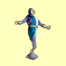

Magie ducha
Zjisti ¾ivot
Mana: 1, Cena: 100, Potøebná úroveò dovednosti: Normální
Umo¾òuje dru¾inì vidìt protivníkovo aktuální zdraví jako urèité èíslo.
| Normální | Doba trvání 10 minut za bod dovednosti | |
| Expert | Doba trvání 30 minut za bod dovednosti | |
| Mistr | Doba trvání 1 hodina za bod dovednosti | |
| Velmistr | Uká¾e kouzla |
Po¾ehnání
Mana: 2, Cena: 200, Potøebná úroveò dovednosti: Normální
Postavy s tímto kouzlem mají vìt¹í ¹anci zasáhnout nestvùru útokem na blízko èi støelami. Bonus postavy se zvý¹í o 5 plus 1 bod za bod dovednosti v Magii Ducha.
| Normální | Doba trvání 1 hodina + 5 minut za bod dovednosti | |
| Expert | Pùsobí na celou dru¾inu | |
| Mistr | Doba trvání 1 hodina + 15 minut za bod dovednosti | |
| Velmistr | Doba trvání 1 hodina + 1 hodina za bod dovednosti |
Osud
Mana: 3, Cena: 300, Potøebná úroveò dovednosti: Normální
Osud mù¾e být pou¾it na postavu ke zvý¹ení ¹ance na zásah nebo na nestvùru ke sní¾ení její ¹ance na zásah. Hodnota je zmìnìna o 20 plus 1 bod za bod dovednosti v Magii Ducha a trvá, dokud cíl útoèí, nebo 5 minut.
| Normální | Bonus nebo posti¾ení 20 + 1 bod za bod dovednosti | |
| Expert | Bonus nebo posti¾ení 20 + 2 bod za bod dovednosti | |
| Mistr | Bonus nebo posti¾ení 20 + 4 bod za bod dovednosti | |
| Velmistr | Bonus nebo posti¾ení 20 + 6 bod za bod dovednosti |
Za¾eò nemrtvé
Mana: 4, Cena: 400, Potøebná úroveò dovednosti: Normální
Pøinutí v¹echny nemrtvé v dohledu k útìku bìhem trvání tohoto kouzla. Toto kouzlo trvá 3 minuty za bod dovednosti v Magii Ducha.
| Normální | Doba trvání 3 minuty + 1 za bod dovednosti | |
| Expert | Doba trvání 3 minuty + 3 za bod dovednosti | |
| Mistr | Doba trvání 3 minuty + 5 za bod dovednosti | |
| Velmistr | Rychlej¹í zotavení |
Odstranìní prokletí
Mana: 5, Cena: 500, Potøebná úroveò dovednosti: Expertní
Odstraní prokletí postavì, pokud toto kouzlo zakouzlí¹ vèas. Vy¹¹í úroveò v Magii Ducha ti umo¾ní kouzlo kouzlit po del¹í dobì prokletí postavy, dokud nebyl dosáhnut "bod, ze kterého neni návratu". Poté ji¾ nezbývá nic jiného, ne¾ náv¹tìva chrámu.
| Normální | n/a | |
| Expert | Funguje, pokud je postava prokletá ménì ne¾ 1 hodinu za bod dovednosti | |
| Mistr | Funguje, pokud je postava prokletá ménì ne¾ 1 den za bod dovednosti | |
| Velmistr | Bez èasového limitu |
Ochrana
Mana: 8, Cena: 750, Potøebná úroveò dovednosti: Expertní
Ochrana mnohem pevnìji pøipoutá du¹i k tìlu. Toto oddálí smrt, kdy¾ postava ztratí mnoho zdraví, ale nezachrání pøed upadnutím do bezvìdomí. Pokud je zdraví chránìné postavy pøíli¹ nízké a kouzlo vyprchá, postava zemøe.
 |
Normální | n/a |
| Expert | Doba trvání 1 hodina + 5 minut za bod dovednosti | |
| Mistr | Pùsobí na celou dru¾inu | |
| Velmistr | Doba trvání 1 hodina + 15 minut za bod dovednosti |
Hrdinství
Mana: 10, Cena: 1000, Potøebná úroveò dovednosti: Expertní
Hrdinství zvy¹uje zranìní, které postava zpùsobí úspì¹ným útokem o 5 plus 1 bod za bod dovednosti Magie Ducha. Toto kouzlo pùsobí na celou dru¾inu.
| Normální | n/a | |
| Expert | Doba trvání 1 hodina + 5 minut za bod dovednosti | |
| Mistr | Doba trvání 1 hodina + 15 minut za bod dovednosti | |
| Velmistr | Doba trvání 1 hodina + 1 hodina za bod dovednosti |
Bièování du¹e
Mana: 15, Cena: 1500, Potøebná úroveò dovednosti: Mistrovská
Toto kouzlo oslabí spojení mezi tìlem cíle a jeho du¹í a zpùsobí tak 10 bodù zranìní plus 2-8 bodù za bod dovednosti Magie Ducha. Kvùli povaze kouzla musí sesílatel stát tìsnì u cíle kouzla. Pokud je cíl pøíli¹ daleko, dojde k selhání kouzla bez ztráty many.
| Normální | n/a | |
| Expert | n/a | |
| Mistr | Støednì rychlé zotavení | |
| Velmistr | Rychlej¹í zotavení |
O¾iv mrtvého
Mana: 20, Cena: 2000, Potøebná úroveò dovednosti: Mistrovská
O¾iví postavu, pokud toto kouzlo zakouzlí¹ vèas. Vy¹¹í úroveò v Magii Ducha ti umo¾ní kouzlo kouzlit po del¹í dobì smrti, dokud nebyl dosáhnut "bod, ze kterého neni návratu". Poté ji¾ nezbývá nic jiného, ne¾ náv¹tívit chrámu. Po o¾ivení bude postava slabá.
| Normální | n/a | |
| Expert | n/a | |
| Mistr | Funguje, pokud je postava mrtvá ménì ne¾ 1 den za bod dovednosti | |
| Velmistr | Bez asového limitu |
Sdílený ¾ivot
Mana: 25, Cena: 3000, Potøebná úroveò dovednosti: Mistrovská
Sdílený ¾ivot zkombinuje zdraví v¹ech tvých postav a rozdìlí je zpìt, jak jen bude mo¾né. K celkovému zdraví jsou pøidány 3 body za bod dovednosti Magie Ducha. Poté je zdraví rozdìleno zpìt postavám, ale ¾ádná postava nemù¾e získat více ne¾ je její maximální zdraví.
| Normální | n/a | |
| Expert | n/a | |
| Mistr | Pøidá 3 body zdraví za bod dovednosti | |
| Velmistr | Pøidá 4 body zdraví za bod dovednosti |
Poznámka: Kouzlo seète aktuální mno¾ství zdraví v¹ech postav, které jsou v danou chvíli pøi vìdomí (mají kladnou hodnotu zdraví) a k této hodnotì pøiète bonus z úrovnì dovednosti. Výsledná hodnota se pak mezi tyto postavy rovnomìrnì rozdìlí (zaokrouhluje se smìrem nahoru).
Pøíklad: V dru¾inì máme 3 postavy pøi vìdomí (zdraví 100, 150 a 200) a 1 postava je v bezvìdomí (-50), klerik ovládá Sdílený ¾ivot na úrovni mistr a má v nìm investováno 10 bodù. Souèet zdraví je tedy 100 + 150 + 200 = 450, bonus z dovednosti je 3 x 10 = 30, dohromady tedy 480. Pøi vìdomí jsou jen 3 postavy, ka¾dá tedy dostane 480 / 3 = 160 bodù zdraví, ètvrtá postava zùstává beze zmìny.
Vzkøí¹ení
Mana: 30, Cena: 5000, Potøebná úroveò dovednosti: Velmistrovská
Vzkøísí postavu, která byla zahubena. Zotavení je velmi pomalé, ale zrychluje se s vy¹¹í zku¹eností v Magii Ducha. Vzkøí¹ená postava bude po zakouzlení tohoto kouzla slabá.
|  | Normální | n/a |
| Expert | n/a | |
| Mistr | n/a | |
| Velmistr | Toto kouzlo je tak dobré, jak jen mù¾e být! |